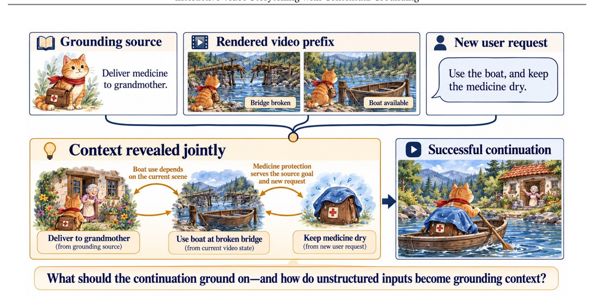
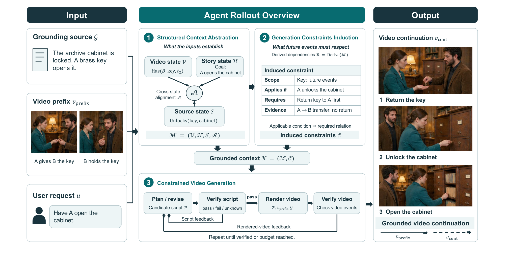
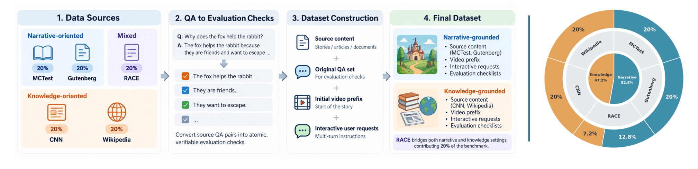
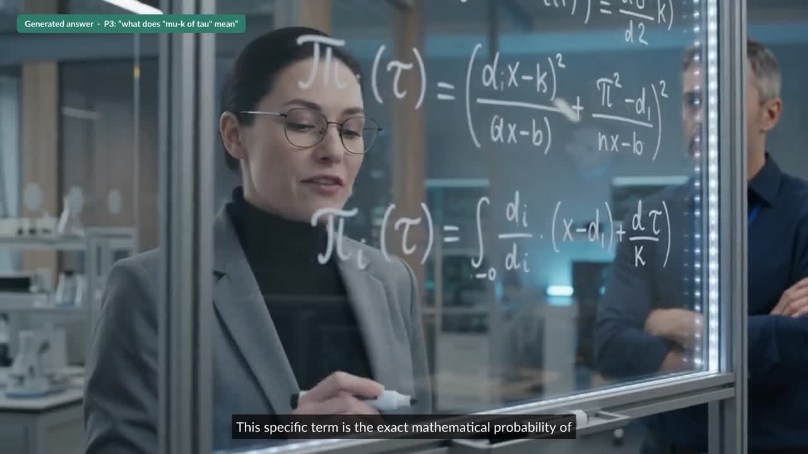

The task
Given a grounding source 𝒢, a previously generated video prefix vprefix, and a new viewer request u, the model generates a continuation vcont. What the continuation must respect is spread across all three inputs: the source says what is supported, the prefix records what the viewer has already seen, and the request says where to go next. These dependencies only surface when the inputs are read together.

Task illustration (knowledge grounding): a viewer asks about the earliest uses of glasses before they were used for vision. The source, the prefix, and the request jointly induce the constraints the continuation must satisfy.
Method
VideoTaleInteract treats contextual grounding as context compilation: it compiles heterogeneous context into a grounded dependency model, and uses that model to control generation end to end.

What the inputs establish
The source, the rendered prefix, and the story so far are turned into aligned video, story, and source states, made of typed predicates with temporal scope and evidence. Cross-context dependencies (prerequisites, persistence, state transitions) are derived from them.
What future events must respect
Dependencies are projected onto a candidate continuation. Only the ones the proposed future makes relevant become constraints c = (scope, applies-if, requires, evidence), each checked as pass, fail, or unknown.
Plan · verify · revise · render
Failed constraints give targeted feedback for revising the script. After rendering, the same constraints are checked against the video, because a valid script does not guarantee a faithful render.
GIV-Bench
GIV-Bench pairs grounding sources, observed video prefixes, and viewer interventions across narrative and knowledge grounding, built from 250 CoQA source passages (MCTest, Gutenberg, RACE, CNN, Wikipedia) rendered in cinematic and cut-out styles. We measure Source Faithfulness (SF), Story Continuity (SC), Interaction Fulfillment (IF), their mean JCS, Visual Consistency (VC), and Video Quality (VQ).

Composite = equal-weight mean of narrative and knowledge JCS, with 95% CI. Best per backbone in bold.
Hover any chart for exact values; use the controls to switch backbone or grounding setting.
Mean of narrative and knowledge grounding by default. Click a legend entry to hide a method.
Composite score per backbone; the bar spans the cross-backbone range.
Per backbone and grounding setting, in points.
Even against the baseline that follows the request most literally, grounding gains concentrate in story continuity.
Interactive demo
These are real viewing sessions from our formative study. The story pauses where a viewer stopped it, and you choose what to ask. Every question is one a real viewer typed, and every answer was generated live by the system and inserted at the next scene boundary. Skip a question and the story simply carries on.
Nine volunteers watched knowledge-grounded videos with and without the ability to interrupt; seven passed the attention test. Learning gain is post-test minus pre-test accuracy, in percentage points.
Each grey line is one participant; blue is the mean.
Four respondents, 1 = strongly disagree, 5 = strongly agree.
Comparison
Each example plays the shared prefix, the viewer request, and then every method’s continuation in turn (Omni-1.1-Flash backbone), with notes on what each gets right or wrong.
Limitations
Most outputs keep the main context (≥ 75), but perfect scores are rarer, especially for story continuity and interaction fulfillment.
Some errors come from the video model rather than from contextual grounding. In the formative-study sessions on the AWR paper, the narration is correct but the rendered visuals are not.

Shots are synthesized separately, so a character’s voice, loudness and background ambience can drift from shot to shot. Our metrics don’t capture this: video quality is scored on sampled frames, not audio.
The script decides what to explain, but the renderer draws its own symbols: misspelled terms, invented variables, data-free plots. Our verifier checks events and entities, not symbolic correctness.
Future work: composite exact overlays (LaTeX, real plots) instead of generating them; audio-aware verification and a fixed voice per character.
@article{li2026interactive,
title = {Interactive Video Storytelling with Contextual Grounding},
author = {Li, Bingxuan and Song, Yiwen and Wu, Xueqing and Pan, Yanzhou and Li, Yang and
Su, Kuang and Liu, Jingyun and Ko, Sebastian and Zhang, Huan and Zhang, Tong and
Peng, Nanyun and Pfister, Tomas and Song, Yale},
journal = {arXiv preprint},
year = {2026}
}